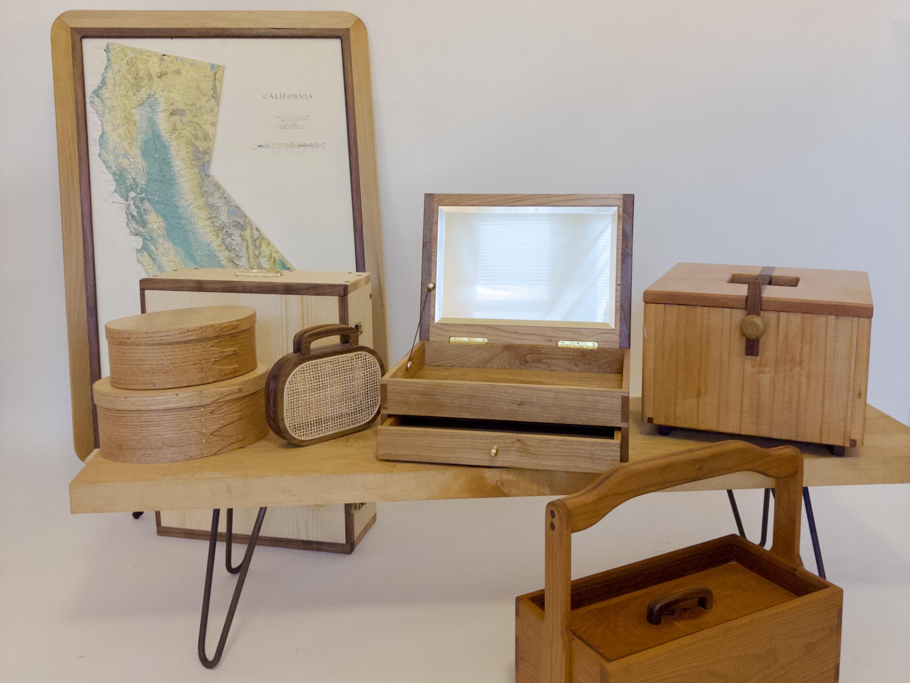
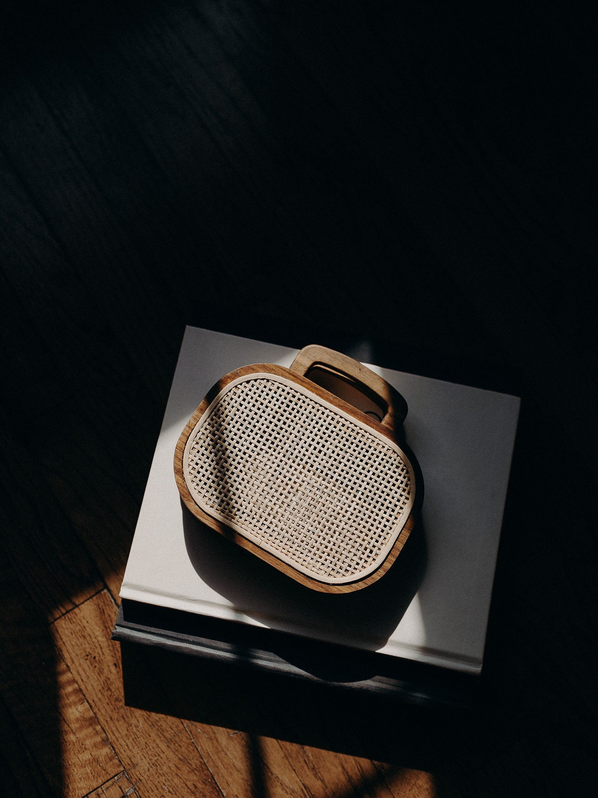
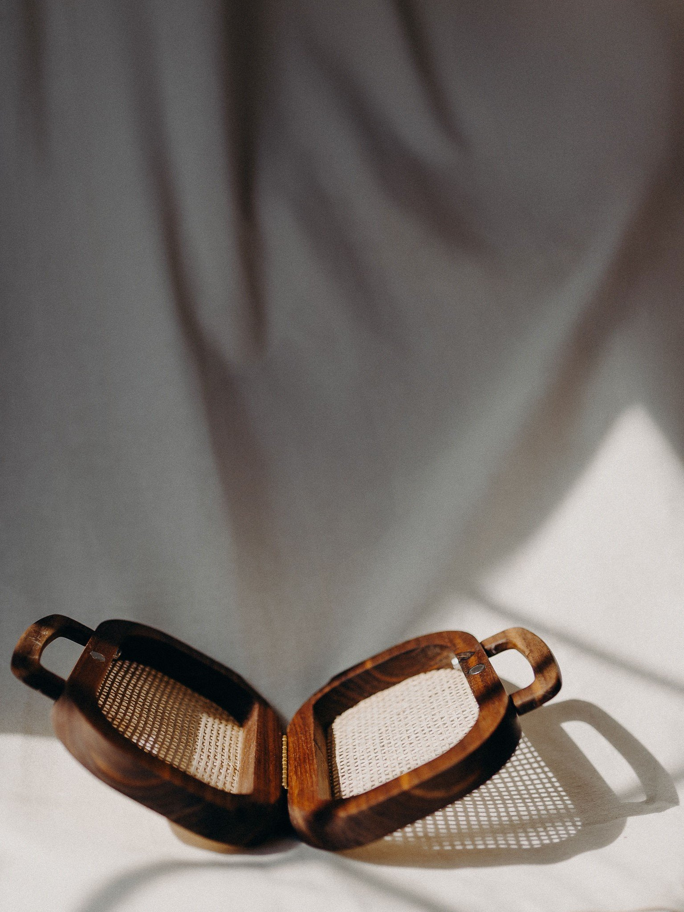
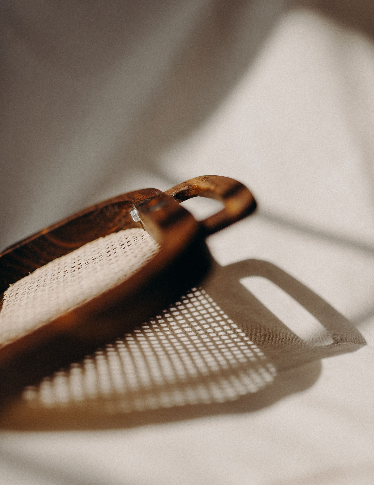
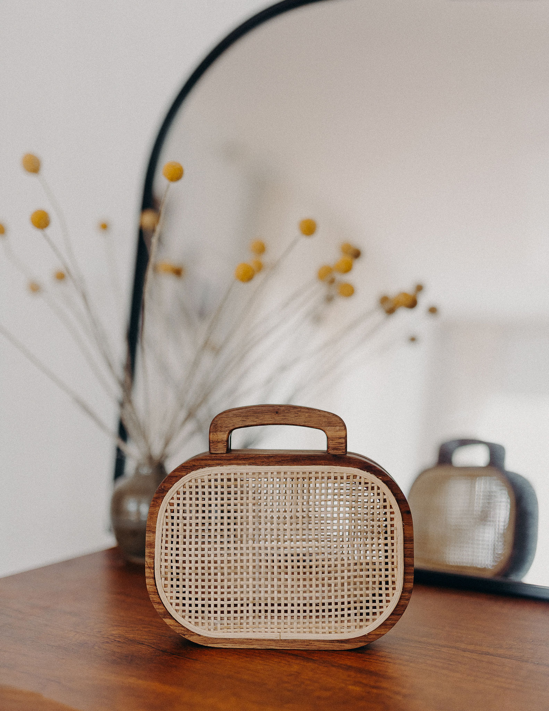

Woodworking

Through woodworking I celebrate history, design, and botany. My work emphasizes traditional techniques, hand tools, natural materials and finishes. I have a particular fondness for wooden sailing vessels, and I have explored this interest at the Arques School for Traditional Boatbuilding. I am available for custom commissions.
Portfolio







